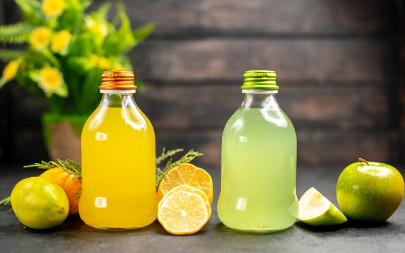

Industry Information
Dec. 12, 2025
Sodium benzoate is one of the most widely used beverage preservatives in modern drink formulations. From carbonated soft drinks to flavored waters and ready-to-drink teas, sodium benzoate helps slow microbial growth, stabilize product quality, and support food safety when used within regulatory limits. For beverage formulators and purchasing managers, understanding how sodium benzoate works—and how it fits into a broader beverage preservatives strategy—is essential for designing reliable shelf life.
What is sodium benzoate?
A sodium salt of benzoic acid used as a food-grade preservative, especially in beverages with low pH.
Why is it used as a beverage preservative?
Sodium benzoate helps control yeasts, molds, and some bacteria in acidic drinks, extending shelf life and reducing spoilage as part of a beverage preservatives system.
Which beverages use sodium benzoate?
Common applications include carbonated drinks, juice beverages, sports drinks, flavored waters, functional beverages, and liquid concentrates.
How does sodium benzoate work?
In acidic conditions, sodium benzoate partially converts to benzoic acid, which interferes with microbial metabolism and slows growth.
What should beverage manufacturers watch for?
pH, dosage, compatibility with other beverage preservatives, and local regulations all influence performance.

Most beverages contain water, sugar, fruit components, or other nutrients that support microbial growth. Without effective beverage preservatives, yeasts, molds, and acid-tolerant bacteria can quickly multiply, causing off-flavors, gas formation, haze, sediment, or visible spoilage.
Key spoilage drivers include:
Product pH and acidity
Residual oxygen and storage temperature
Hygienic conditions during processing and filling
Post-opening handling by the consumer
Sodium benzoate and other beverage preservatives help slow these spoilage mechanisms, particularly in still and carbonated beverages that are stored at ambient temperatures for extended periods.
Sodium benzoate is especially effective in acidic systems, typically below pH 4.5. In this range, a portion of sodium benzoate converts to undissociated benzoic acid, which can cross microbial cell membranes. Once inside the cell, benzoic acid disrupts normal metabolism and energy generation, slowing the growth of sensitive yeasts and bacteria.
In a beverage preservatives program, sodium benzoate is often combined with:
Acidulants such as citric acid or phosphoric acid to maintain the desired pH
Other beverage preservatives such as potassium sorbate in certain juice or fruit-based drinks
Good manufacturing practices, including CIP procedures and controlled filling conditions
Because sodium benzoate is highly soluble in water, it is easy to incorporate into liquid syrup phases or dosing systems used in beverage plants. This makes it a practical option for large-scale beverage production as well as smaller specialty lines.
For formulators and technical teams, several parameters determine how well sodium benzoate will function as part of the beverage preservatives system:
pH
The lower the pH (within the target range for the drink), the more effective sodium benzoate becomes.
Dosage
Under-dosing may not provide adequate protection, while over-dosing can exceed regulatory or internal specification limits.
Beverage matrix
Sugar content, juice level, and presence of proteins or functional ingredients can influence preservative performance.
Packaging and process
Hot-fill, cold-fill, and aseptic processes each interact differently with beverage preservatives. Light exposure and oxygen pick-up can also affect shelf life.
Synergy with other preservatives
In some beverages, sodium benzoate is used together with other beverage preservatives to broaden the spectrum of protection and support longer distribution chains.
These elements are useful as bullet points or checklists for buyers comparing preservative options and production routes.
A balanced shelf-life strategy often uses more than one preservative or relies on process controls plus preservatives.
Overview of common preservatives for beverages
Preservative | Typical pH range | Main microbial targets | Typical applications |
~2.0–4.5 | Yeasts, molds, some bacteria | Carbonated soft drinks, flavored waters, juices | |
~2.5–5.5 | Yeasts and molds | Juice drinks, smoothies, some dairy beverages | |
Sulfur dioxide / sulfites | Low pH wines, juices | Yeasts, bacteria | Wines, some fruit juices |
Natural extract systems | Product dependent | Selected spoilage organisms | “Natural” positioned beverages |
Beverage category | Example preservative system | Notes on sodium benzoate use |
Carbonated soft drinks | Sodium benzoate + acidulant | Helps maintain shelf life in ambient distribution |
Juice-based drinks | Sodium benzoate + potassium sorbate + controlled pH | Supports mold and yeast control in high-juice systems |
Flavored waters | Sodium benzoate as primary beverage preservative | Often low-calorie products with extended shelf life |
Sports and energy drinks | Sodium benzoate + optimized pH + hygienic filling | Designed for long shelf life and global shipping |
Liquid concentrates and syrups | Sodium benzoate with high solids and low pH | Protects against spoilage during storage and repeated use |
These examples can be expanded with product photos or process diagrams for data visualization on the page.
For beverage companies, sodium benzoate selection is not only a technical decision but also a purchasing and risk-management decision. When specifying sodium benzoate and other beverage preservatives, teams typically consider:
Consistent purity and assay of sodium benzoate
Compliance with food-grade standards and regional regulations
Particle size or physical form suited to plant equipment
Documentation support, including COA and technical data sheets
Long-term supply reliability, MOQ, and logistics options
In this context, a supplier like GOLIATH can offer stable-quality sodium benzoate and coordinated support for beverage preservatives across multiple product lines, helping formulators align shelf-life targets with cost and compliance requirements.
Q1. Is sodium benzoate safe to use in beverages?
A1. Sodium benzoate has a long history of use as a beverage preservative within defined regulatory limits. Safety assessments and regulations set maximum levels for sodium benzoate and other beverage preservatives, and manufacturers formulate within those limits.
Q2. Why does sodium benzoate work best in acidic drinks?
A2. Sodium benzoate is most effective as a beverage preservative when the drink has a low pH. Under acidic conditions, more of the preservative is present as benzoic acid, which can more easily enter microbial cells and inhibit growth.
Q3. Can sodium benzoate be combined with other beverage preservatives?
A3. Yes. Many beverage formulations use sodium benzoate together with other beverage preservatives such as potassium sorbate, depending on the product type, shelf-life target, and labeling strategy.
Q4. Does sodium benzoate change the taste of the beverage?
A4. At appropriate usage levels, sodium benzoate has limited sensory impact. Good formulation practice is to keep total beverage preservatives within effective but conservative ranges and to validate taste in sensory trials.
Q5. How can beverage brands communicate the use of preservatives to consumers?
A5. Labels typically list sodium benzoate by its additive name. Some brands also explain why beverage preservatives are used—for example, to help keep the product safe and stable through its intended shelf life—while continuing to optimize recipes, processes, and packaging for overall quality.

Goliath Ingredients Holding Limited
1st Floor, Ellen Skelton Building, 3076 Sir Francis Drake’s Highway, Road Town, Tortola, VG1110, British Virgin Islands.
henry@goliathholding.com
Navigation
Email: henry@goliathholding.com